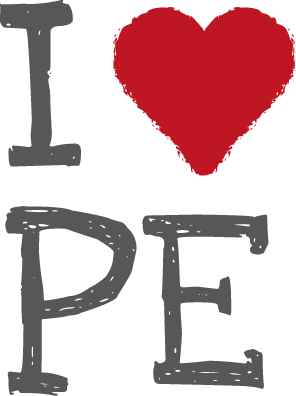
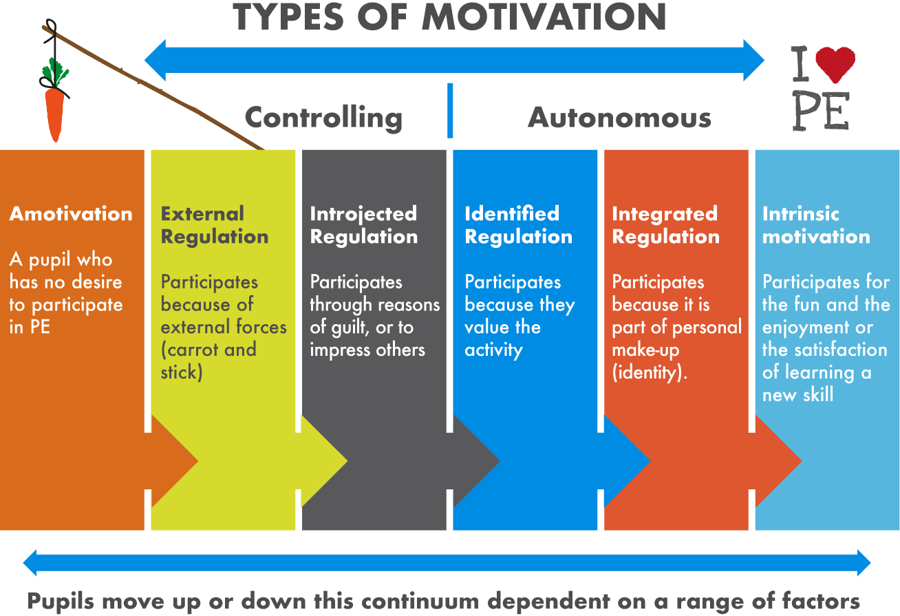
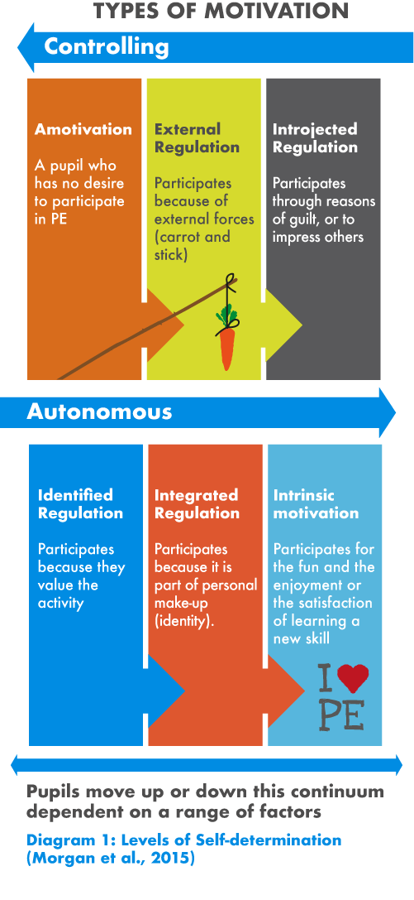
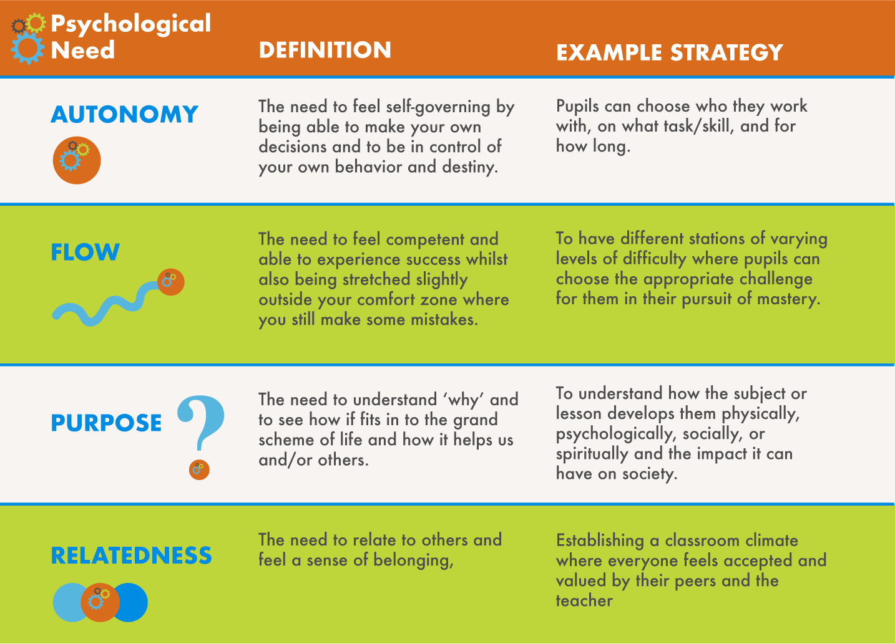
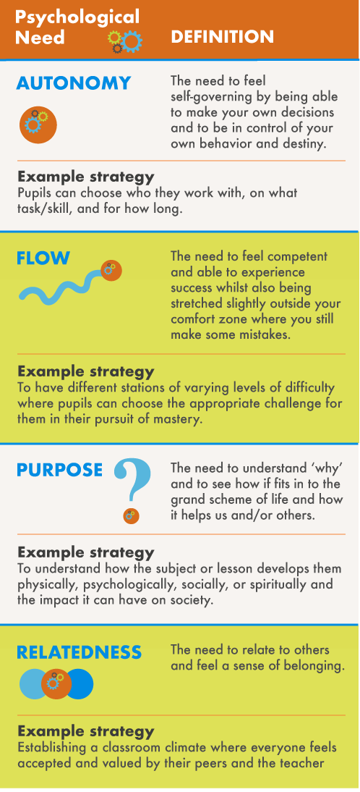
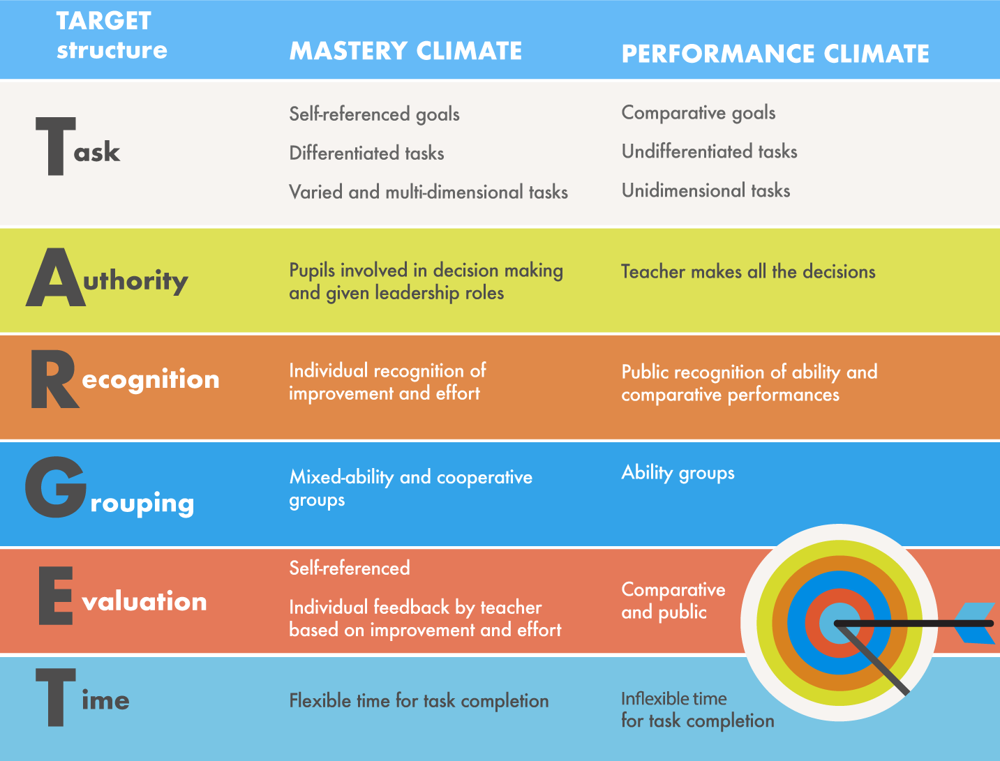
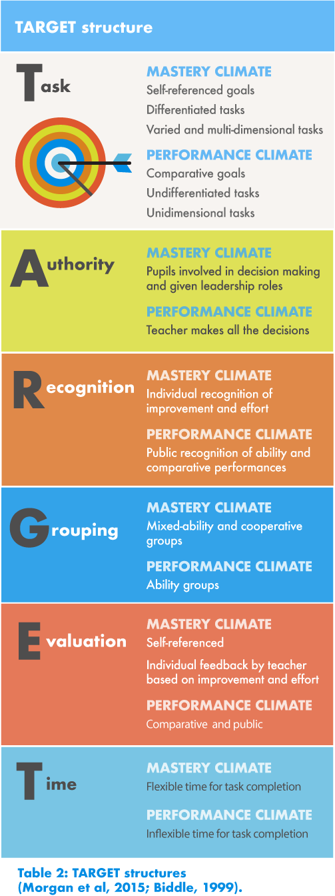

To be able to motivate all pupils in PE so that they participate in all activities with effort and a keenness to learn and refine skills is an invaluable asset of an outstanding PE teacher. However, for most of us, motivating every single student in our classes to try their best, focus, persevere through their struggles, maintain a positive attitude and enjoy the learning process can feel unattainable and unrealistic. This is due to our recognition that we have students with contrasting attitudes towards PE. For some it is the highlight of their day, whilst others may feel stress, anxiety or even apathy. Therefore, in order for us to motivate pupils so that they can maximize their attainment and hopefully develop a lifelong love for physical activity and learning we need to have the tools to do so [1, 2].

Fortunately, there has been a wealth of research into what teaching behaviors and motivational strategies are most effective when delivering PE, and we can all benefit from understanding the following:
- Extrinsic vs Intrinsic Motivation
- Self-determination theory
- The Psychological needs of all humans; and
- Establishing a Mastery climate using TARGET
Firstly, being able to distinguish between extrinsic and intrinsic motivation is an important factor as it helps us identify our students’ drives and motives, and how we recognize and reward attainment. Extrinsic motivation comes from gaining an external tangible reward (e.g., trophies, certificates, merits) or social reward (praise, recognition, status or approval by classmates or teachers). Whereas, intrinsic motivation arises from within an individual and can be identified as doing an activity because it is naturally satisfying to participate in. Therefore, an intrinsically motivated PE student enjoys putting forth effort to learn as they find it enjoyable to play, improve and develop skills [1, 3].
For students that struggle to find intrinsic motivation for an activity, extrinsic rewards may temporarily improve their motivation. But for students who are already intrinsically motivated, adding extrinsic rewards, particularly of a controlling nature (e.g., use merits to goad students to behave) may lower their intrinsic motives. Rather, the best use of extrinsic rewards are informational, which consist of the teacher providing specific and private feedback about a student’s competence at a certain task [1, 3].
Unfortunately, we can’t just simplify motives into two categories (extrinsic and intrinsic) as our human nature is much more complex than that. Therefore, a continuum of motivation emerged called self-determination theory (SDT) which has on one-side ‘amotivation’ and on the other ‘intrinsic motivation’. The table below provides a concise overview of SDT (diagram 1).


Diagram 1: Levels of Self-determination (Morgan et al., 2015)
Essentially, our goals as educators is to first identify where our pupils are along the SDT continuum and then to try to move them towards becoming more intrinsically motivated. An interesting activity you may want to try with your students is to encourage them to discuss their motivation in reference to diagram 1, and for them to indicate where their motivation stems from. SDT is based on the premise that humans are motivated by the following psychological needs - autonomy, competence and relatedness [1]. In Pink’s (2009) book Drive, the author ascertained that the secrets to motivating people were to provide them with a sense of autonomy, flow (similar to competence), and purpose in their work [4]. As a result, it could be deduced that there exists four key psychological needs that will help us motivate our students, which are detailed in the table below.
Table 1: Psychological Needs of Humans (Morgan et al., 2015; Pink, 2009)


As a result of the aforementioned motivation theory, we are provided with an arsenal of knowledge that we can experiment with in order to see how effective they motivate our students in PE. It would be impractical (and unwise) to follow all the theoretical concepts in a single lesson, and with the whole class. As we mentioned earlier, some students will be already intrinsically motivated to try their best in your class. Instead, we can utilize some of these concepts with our less driven students. Whether it be giving them a greater sense of autonomy in the lesson (not complete autonomy, you’re still the teacher who sets the expectations) or helping them find purpose in the activity or in trying their best (even when they don’t feel like it) [1]. One important strategy to help pupils try their best in your lessons is to establish a mastery climate. This is where the emphasis is placed on learning, trying hard, persevering through adversity, having self-referenced goals, and making personal progress [1, 5]. This is in contrast to a performance climate where the focus is on winning and social comparison. In order for us to promote a mastery climate, the acronym TARGET was devised and is detailed below (table 2).
Table 2: TARGET structures (Morgan et al, 2015; Biddle, 1999).



In conclusion, in order for us to get the best out of students it is beneficial to understand about extrinsic and intrinsic motivation and that we can help pupils move along the self-determination theory continuum by giving them a greater sense of autonomy, flow, purpose and relatedness. In order to achieve that we should aim to create a mastery climate in our lessons using the TARGET structures where pupils understand that effort and learning is the focus. If you would like to learn more about motivation we recommend reading Drive by Pink (2009) and Morgan et al’s (2015) chapter from Learning to Teach Physical Education in the Secondary School [1].
References
- Morgan, K., Milton, D., and Longville J. (2015) Motivating pupils for learning in PE. In Capel, S. & Whitehead, M (Ed) Learning to Teach Physical Education in the Secondary School: A Companion to School Experience. 4th Edition. London: Routledge.
- Biddle, S. (1999) The motivation pupils in Physical Education, in Hardy, C.A. & Mawer, M. (Ed.) Learning and Teaching in Physical Education. London: Falmer Press
- Deci, E.L. and Ryan, R.M. (1985) Intrinsic Motivation and Self Determination in Human Behaviour. New York: Plenum Press.
- Pink, D.H. (2009) Drive: The surprising truth about what motivates us. Edinburgh: Canon Gate.
- Ames, C. (1992) Achievement goals, motivational climate and motivational processes, in G.C. Robers (ed.) Motivation in Sport and Exercise, Champaign, IL: Human Kinetics, pp. 161-176.